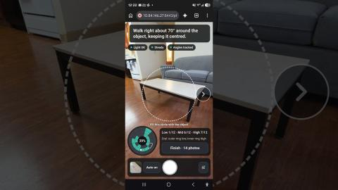

OpenScanner3D
Built a browser-based 3D scanner with 36 guided views, COLMAP reconstruction, and SAM 2 masking. A phone captures photos over local Wi-Fi and the laptop generates a textured mesh. The capture workflow checks photo quality and produces a UV-unwrapped, low-poly model.
Python, FastAPI, COLMAP, SAM 2, Three.js. Nothing leaves your local network.